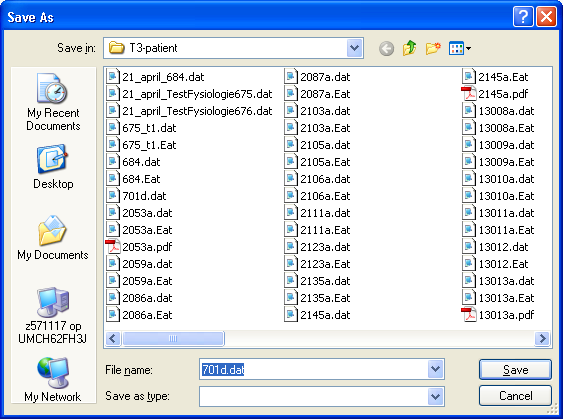
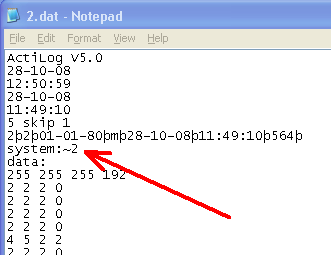

Aktometer (type 3) ( April 2009 )
Algemeen
In onderstaand plaatje zijn de hoofd elementen van de grafische weergave aangegeven.
Geheel links-boven de sneltoetsen voor:
Aan de linkerkant de kernwaarden, bepaald over de geldige dagen. De waarden kunnen worden weergegeven in de volgende eenheden: Akto (vergelijkbaar met de oude aktometer), Mets ( Metabolic Equivalent of Task, wikipedia ) of kCal.
Onderin een overzicht van de gehele opname, welke op 15 of 30 dagen (knopje links van de grafiek) kan worden ingesteld. De weekend dagen zijn groen gearceerd. De rode lijn onder de grafiek geeft de geldige dagen weer. Het aan uit schakelen van een dag kan gebeuren door in de grafiek op de betreffende dag met de middel muis of rechter muistoets te klikken. De rode lijn boven de grafiek geeft de dag die wordt weergegeven in detail. De blauwe arcering geeft het waak gemiddelde per dag aan (deze waarde is uitvergroot weergegeven, factor 3).
Onder de grafiek is een tabel, waarin de waak / slaaptijden kunnen worden afgelezen en ingesteld. De onderste regel geeft het waak-gemiddelde over de betreffende dag.
Rechts in het midden de detail grafiek van één enkele dag (ongefilterd). De rode lijn geeft het gemiddelde over de hele geldige periode. Deze rode lijn maakt een sprongetje na het opstaan en bij het naar bed gaan. Tijdens het waken wordt met de rode lijn het waakgemiddelde weergegeven, tijdens het slapen wordt met de rode lijn het etmaal-gemiddelde weergegeven. De blauwe arcering geeft het gemiddelde over deze dag ( weer net als de rode lijn gescheiden in etmaal gemiddelde en waak gemiddelde). Als de blauwe arcering dus boven de rode lijn uitkomt, is de aktiviteit op deze dag hoger dan gemiddeld en omgekeerd.
Rechts bovenin bevindt zich de grijswaarde grafiek. Hierin wordt de geselecteerde dag weer aangegeven met een rode lijn ( de rode lijn staat er net onder). De opsta en naar bed tijden zijn aangegeven met een witte stip. Als we naar het opstaan patroon in onderstaande grafiek kijken, zien we deze persoon door de week nagenoeg op iedere dag op hetzelfde tijdstip opstaat, en veel later in het weekend. In het naar bed gaan zit duidelijk wat meer variatie. De gevoeligheid van de grijswaarde curve kan met de schuif aan de rechterkant worden ingesteld.
Eenheden kCal / Mets
Voor het berekenen van deze waarden dient allereerst de Basal metabolic rate (BMR) bepaald te worden. Hiervoor zijn afhankelijk van de gebruikte methode het leeftijd, geslacht, gewicht en lengte van de patiënt nodig. De patiënt gegevens zijn daarom uitgebreid met gewicht en lengte. De berekening wordt alleen uitgevoerd als alle genoemde gegevens bekend zijn. Momenteel wordt voor de berekening van de BMR, de WHO 1985 gebruikt.
Iedere keer bij het inlezen van een nieuwe patiënt, wordt de instelling van eenheid / mean uit de ini-file gelezen. Als er niets in de ini-file staat gespecificeerd, wordt standaard Akto / waken geselecteerd.
Voor de Eenheid geldt hierbij: ontbreekt of 0 = Akto, 1 = Mets, 2 = kCal.
Voor mean geldt: ontbreekt of 0 = waken, 1 = 24-uur
Uitlezen aktometer
Plaats de aktometer in de uitlees-houder en druk op de uitleesknop ...
... het programma opent vanzelf het tweede tabblad (met opname gegevens en communicatie verloop) en start het uitlezen van de aktometer.
Zodra de aktometer geheel is uitgelezen (duurt ongeveer 10 seconden), wordt de bestands-opslag dialoog getoond.

De filenaam is al ingevuld, op grond van het uitgelezen patient nummer en je hoeft dus enkel op bewaren te drukken. Als het bestand is opgeslagen, wordt automatisch teruggesprongen naar het eerste tabblad, waar de uitgelezen gegevens grafisch worden weergegeven.
AktoMeter Starten
Opnametijd Instellen
De aktometer kan met verschillende tijd resoluties worden gebruikt. Uiteraard is het zo dat bij een hogere tijdsresolutie het geheugen eerder vol is en is dus de opnametijd beperkt. Standaard staat de aktometer ingesteld op een tijd resolutie van 5 minuten, hetgeen betekent dat eens per 5 minuten de gemiddelde aktiviteit wordt opgeslagen in het geheugen en de opnametijd bedraagt dan 30 dagen. In onderstaande tabel zijn de keuzemogelijkheden weergegeven.
|
Tijd Resolutie |
Max Opname Duur |
Ini-Default |
DataFile |
|
30 sec |
3 dagen |
Sample Period = 0 |
system:~1 |
|
1 min |
6 dagen |
Sample Period = 1 |
system:~2 |
|
2 min |
12 dagen |
Sample Period = 2 |
system:~4 |
|
2.5 min |
15 dagen |
Sample Period = 3 |
system:~5 |
|
5 min |
30 dagen |
Sample Period = 4 |
system:~10 |
Wil men permanent een andere tijd resolutie dan 5 minuten, dan dient in de ini-file Akto.ini een regel te worden opgenomen, zie voor de gewenste waarde de kolom "Ini-Default" in de bovenstaande tabel.
In geval een andere tijd resolutie dan 5 minuten wordt toegepast, is dit in data file herkenbaar aan de extra regel "system~2", zie voor de betekenis de kolom DataFile in bovenstaande tabel.

Voor het tijdlelijk instellen van een andere tijd resolutie, kan gebruik worden gemaakt van het standaard instelvenster (er wordt wel om een extra bevestiging gevraagd). Deze instelling blijft vervolgens gehandhaafd, totdat het aktometer programma wordt afgesloten.
Kernwaarden
Aan de linkerkant de kernwaarden, bepaald over de geldige dagen. De volgorde van de kernwaarden ligt vast.
|
Kernwaarde |
Uitleg |
|
Mean Etmaal |
Gemiddelde over 24 uur per dag, over de geselecteerde dagen. |
|
Mean Waken |
Gemiddelde over de aktieve periode per dag, over de geselecteerde dagen. |
|
Mean ZatZon |
Mean Waken, enkel over het weekend. |
|
Mean Week |
Mean Waken, enkel over door de weekse dagen. |
|
Daglengte |
De gemiddelde daglengte in uren, over de geselecteerde dagen. |
|
DagLen Var |
De variantie van de daglengte. Als deze waarde groter is dan een zelf te bepalen maximum (bv 1.5) dan is het belagrijk de opsta en naar bed tijden te controleren. |
|
Typologie |
Via de inifile kan worden aangegeven welke kernwaarden zichtbaar worden gemaakt. Als in de inifile geen specificatie van de kernwaarden is gegeven, worden alle kernwaarden, behalve Mets en kCal weergegeven. In de inifile betekent een "1" dat de kernwaarde wordt weergegeven, anders wordt deze niet getoond.
Vanaf versie 3.0, worden slechts 7 parameters weergegeven, derhalve moet in bovenstaand plaatje "Kern Getallen = 1111111" zijn.
Dag-Nacht detectie
Hoewel de dag-nacht detectie door een geavanceerd algoritme wordt bepaald, is zelfs dit algoritme niet in staat altijd en bij iedere patient het naar bed gaan en opstaan goed te detecteren. Het is dus raadzaam om de dag-nacht detectie altijd te controleren, indicaties voor een foutieve dag-nacht detectie zijn een verhoogde daglengte variatie (> 2), en het niet op 1 lijn liggen van de witte puntjes in de grijswaarde grafiek.Bij iemand met een onregelmatig leefpatroon zullen deze waarden overigens niet zeggen.
Het gedetecteerde moment van opstaan is op 3 plaatsen te zien (zie onderstaande figuur):
Het instellen of aanpassen van het moment van opstaan kan op verschillende wijze gebeuren. Tijdens het instellen zal altijd de paarse lijn in beeld komen.
De eerste manier is om de tijd gewoon als geldige tijdsaanduiding direct in de tabel in te vullen.
De tweede manier is om de paarse cursor te positioneren, door deze naar de juiste plaats te slepen.
De paarse lijn voor het opstaan kan op de volgende manier in beeld worden gebracht: het klikken inde tabel op de opstaan tijd, dan wel in de dag-weergave de middel-muis knop in te drukken.
Bij het bepalen van het juiste moment van opstaan (en naar bed gaan) kan zowel de zelfobservatie (maar ook daar moet je altijd afvragen of deze juist is ingevuld) als ook de groene lijn (onder de daggrafiek) die het staan aangeeft behulpzaam zijn. In de 30 patienten die ik nu heb gezien (zonder op de hoogte te zijn van de zelfobservatie) zijn de volgende waarnemingen gedaan die van belang kunnen zijn bij een juiste bepaling van dag / nacht:
Het instellen van het naar bed gaan, gaat in principe op dezelfde manier. De bijbehorende paarse cursor kan in beeld worden gebracht met de rechter muistoets dan wel het aanklikken van het tijdstip in de tabel. Als het naar bed gaan na 24:00 uur ligt, is de paarse cursor niet zichtbaar, het instellen moet dan gebeuren door in de tabel de waarde in te tikken. Hierbij moet de tijd worden aangegeven t.o.v. 24:00 uur en voorzien zijn van een plusje. Bijvoorbeeld als iemand om 10 voor een s'nachts naar bed is gegaan, ziet de tabel er als volgt uit:
Rapportage in TestOrganizer
De volgende items worden geëxporteerd t.b.v. de rapportage in de Testorganizer.
1 = serienummer van de aktometer
2 = WaakGemiddelde over de geselecteerde dagen
3 = Het aantal geselecteerde dagen
4 = WaakGemiddelde over de geselecteerde weekse-dagen
5 = Het aantal geselecteerde weekse-dagen
6 = WaakGemiddelde over de geselecteerde weekend-dagen
7 = Het aantal geselecteerde weekend-dagen
8 = testgetal 684
9 = testgetal 684
=== 6uurs en dag-statistiek ===
12 = gemiddelde over dagperiode 1 van de geselecteerde dagen
13 = gemiddelde over dagperiode 1 van de geselecteerde dagen
14 = gemiddelde over dagperiode 1 van de geselecteerde dagen
15 = gemiddelde over dagperiode 1 van de geselecteerde dagen
=== eerste geselecteerde dag ===
20 = Dagnummer van de eerste geselecteerde dag
21 = WaakGemiddelde over deze dag
22 = gemiddelde over dagperiode 1 van deze dag
23 = gemiddelde over dagperiode 2 van deze dag
24 = gemiddelde over dagperiode 3 van deze dag
25 = gemiddelde over dagperiode 4 van deze dag
=== tweede geselecteerde dag ===
30 = Dagnummer van deze dag
31 = WaakGemiddelde over deze dag
32 = gemiddelde over dagperiode 1 van deze dag
33 = gemiddelde over dagperiode 2 van deze dag
34 = gemiddelde over dagperiode 3 van deze dag
35 = gemiddelde over dagperiode 4 van deze dag
.....
===laatste (30-ste) dag ===
de niet geselecteerde dagen bevatten allemaal nullen
310 = Dagnummer van deze dag
311 = WaakGemiddelde over deze dag
312 = gemiddelde over dagperiode 1 van deze dag
313 = gemiddelde over dagperiode 2 van deze dag
314 = gemiddelde over dagperiode 3 van deze dag
315 = gemiddelde over dagperiode 4 van deze dag
6-uurs statistiek
In plaats van de standaard verdeling van een dag in periode van 6 uur, kunnen ook andere tijden worden gebruikt.
In dat geval dient handmatig in de ini-file de volgende gegevens te worden toegevoegd:
[6uurs statistiek]
eind_blok_1_in_uren = 8
eind_blok_2_in_uren = 12
eind_blok_3_in_uren = 18
De begin en eindtijd van een dag zijn altijd vast ingesteld op 0 en 24 uur.
Research Parameters
Algemene gegevens berekend over de relevante dagen
Nadat het signaal via een smitt-trigger met drempel Treshold is gegaan, worden over alle perioden de volgende parameters berekend:
Vervolgens wordt gezocht naar de 5 grootste pieken, op grond van de totale energie in een piek.
Over deze pieken worden de volgende parameters berekend:
De statistiek van de bijbehorende laagperioden (dat is de laag periode volgend opeen van de 5 gevonden hoogperioden)
Raw Export
De data van individuele opnamen kan als ruwe data (alle afzonderlijke data samples ) worden geëxporteerd als een tab-delimited file, zodat ze in andere programma's verder kunnen worden geanalyseerd. Momenteel wordt iedere keer als een datafile wordt ingelezen of weggeschreven de gewenste ruwe databestanden aangemaakt. Het inschakelen van deze export gebeurt momenteel door het wijzigen van de ini-file (geef alleen de gewenste regels in):
Er worden dan in dezelfde directory als waarin het normale databestand staat, bestanden aangenaakt met de extensie "raw", "Mets" en/of "kCal", het Mets bestand ziet er bijvoorbeeld als volgt uit (in Excel) :